Chapter 27 Ensemble Methods
Chapter Status: Currently chapter is rather lacking in narrative and gives no introduction to the theory of the methods. The R code is in a reasonable place, but is generally a little heavy on the output, and could use some better summary of results. Using Boston for regression seems OK, but would like a better dataset for classification.
In this chapter, we’ll consider ensembles of trees.
27.1 Regression
We first consider the regression case, using the Boston data from the MASS package. We will use RMSE as our metric, so we write a function which will help us along the way.
We also load all of the packages that we will need.
library(rpart)
library(rpart.plot)
library(randomForest)
library(gbm)
library(caret)
library(MASS)
library(ISLR)We first test-train split the data and fit a single tree using rpart.
set.seed(18)
boston_idx = sample(1:nrow(Boston), nrow(Boston) / 2)
boston_trn = Boston[boston_idx,]
boston_tst = Boston[-boston_idx,]27.1.1 Tree Model
boston_tree_tst_pred = predict(boston_tree, newdata = boston_tst)
plot(boston_tree_tst_pred, boston_tst$medv,
xlab = "Predicted", ylab = "Actual",
main = "Predicted vs Actual: Single Tree, Test Data",
col = "dodgerblue", pch = 20)
grid()
abline(0, 1, col = "darkorange", lwd = 2)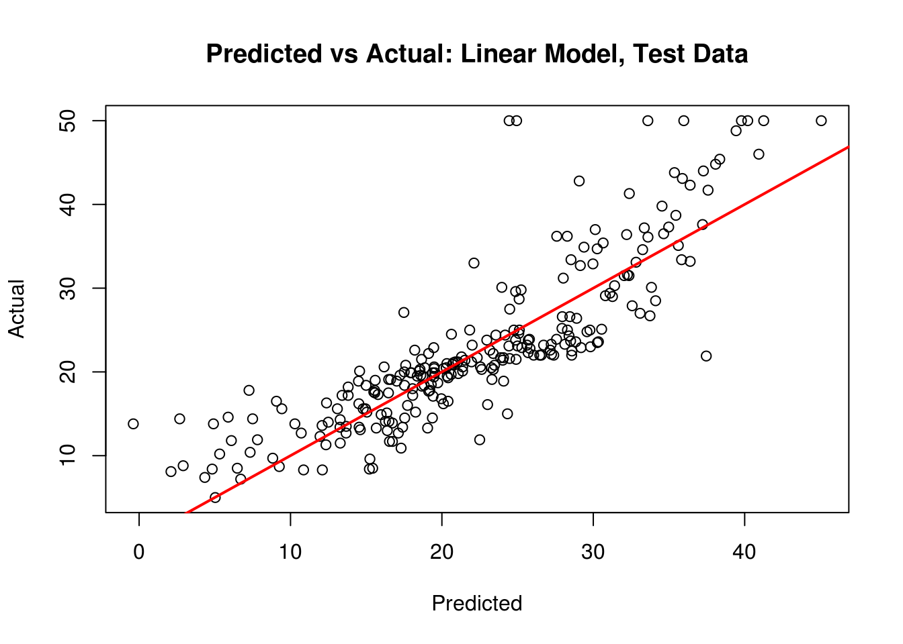
## [1] 5.05113827.1.2 Linear Model
Last time, we also fit an additive linear model, which we found to work better than the tree. The test RMSE is lower, and the predicted vs actual plot looks much better.
boston_lm_tst_pred = predict(boston_lm, newdata = boston_tst)
plot(boston_lm_tst_pred, boston_tst$medv,
xlab = "Predicted", ylab = "Actual",
main = "Predicted vs Actual: Linear Model, Test Data",
col = "dodgerblue", pch = 20)
grid()
abline(0, 1, col = "darkorange", lwd = 2)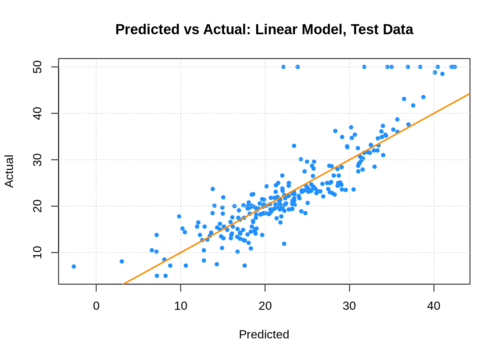
## [1] 5.01608327.1.3 Bagging
We now fit a bagged model, using the randomForest package. Bagging is actually a special case of a random forest where mtry is equal to \(p\), the number of predictors.
boston_bag = randomForest(medv ~ ., data = boston_trn, mtry = 13,
importance = TRUE, ntrees = 500)
boston_bag##
## Call:
## randomForest(formula = medv ~ ., data = boston_trn, mtry = 13, importance = TRUE, ntrees = 500)
## Type of random forest: regression
## Number of trees: 500
## No. of variables tried at each split: 13
##
## Mean of squared residuals: 13.79736
## % Var explained: 82.42boston_bag_tst_pred = predict(boston_bag, newdata = boston_tst)
plot(boston_bag_tst_pred,boston_tst$medv,
xlab = "Predicted", ylab = "Actual",
main = "Predicted vs Actual: Bagged Model, Test Data",
col = "dodgerblue", pch = 20)
grid()
abline(0, 1, col = "darkorange", lwd = 2)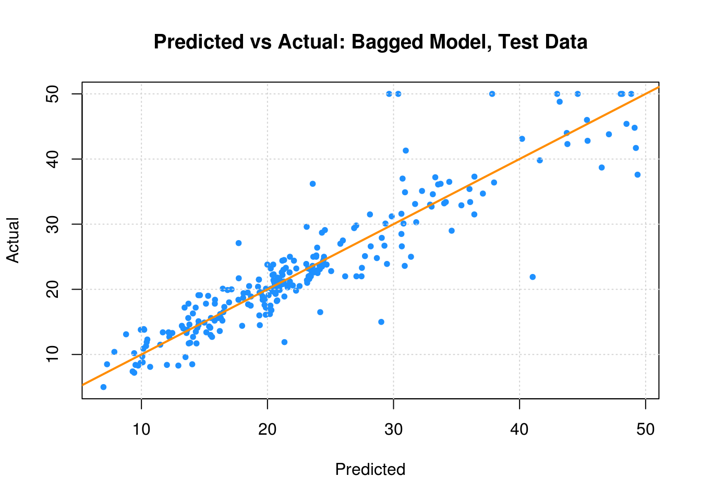
## [1] 3.905538Here we see two interesting results. First, the predicted versus actual plot no longer has a small number of predicted values. Second, our test error has dropped dramatically. Also note that the “Mean of squared residuals” which is output by randomForest is the Out of Bag estimate of the error.
plot(boston_bag, col = "dodgerblue", lwd = 2, main = "Bagged Trees: Error vs Number of Trees")
grid()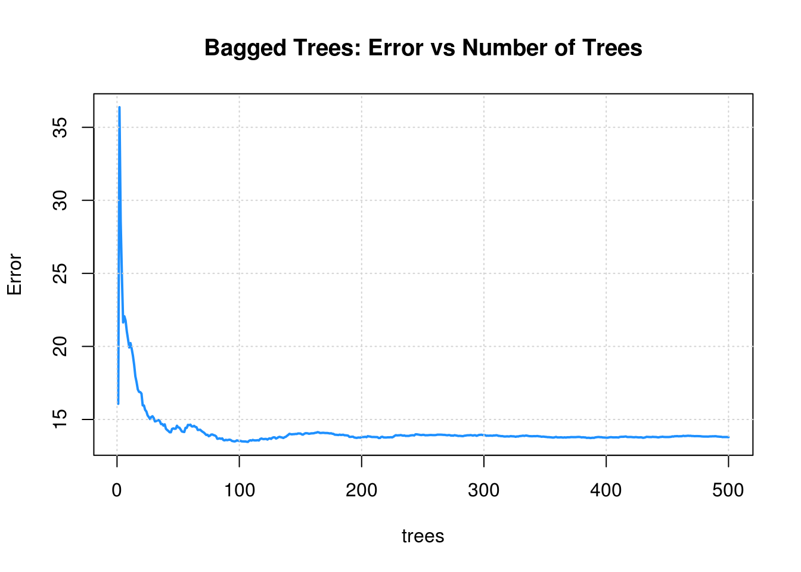
27.1.4 Random Forest
We now try a random forest. For regression, the suggestion is to use mtry equal to \(p/3\).
boston_forest = randomForest(medv ~ ., data = boston_trn, mtry = 4,
importance = TRUE, ntrees = 500)
boston_forest##
## Call:
## randomForest(formula = medv ~ ., data = boston_trn, mtry = 4, importance = TRUE, ntrees = 500)
## Type of random forest: regression
## Number of trees: 500
## No. of variables tried at each split: 4
##
## Mean of squared residuals: 12.629
## % Var explained: 83.91## %IncMSE
## crim 14.451052
## zn 2.878652
## indus 10.258393
## chas 1.317298
## nox 12.400294
## rm 27.137361
## age 10.473007
## dis 12.568593
## rad 5.120156
## tax 6.960258
## ptratio 10.684564
## black 7.750034
## lstat 28.943216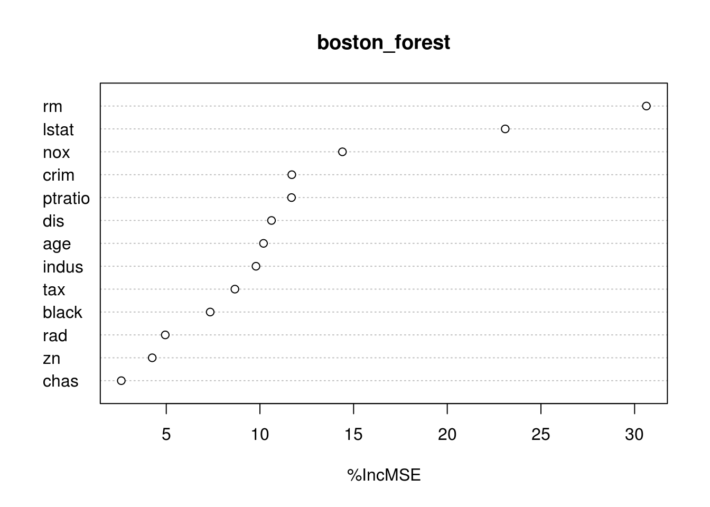
boston_forest_tst_pred = predict(boston_forest, newdata = boston_tst)
plot(boston_forest_tst_pred, boston_tst$medv,
xlab = "Predicted", ylab = "Actual",
main = "Predicted vs Actual: Random Forest, Test Data",
col = "dodgerblue", pch = 20)
grid()
abline(0, 1, col = "darkorange", lwd = 2)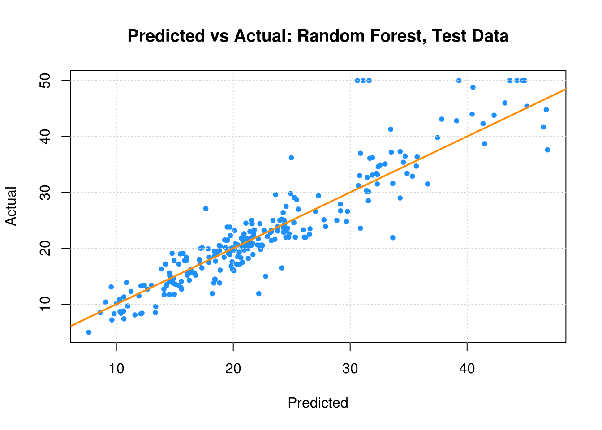
## [1] 4.172905boston_forest_trn_pred = predict(boston_forest, newdata = boston_trn)
forest_trn_rmse = calc_rmse(boston_forest_trn_pred, boston_trn$medv)
forest_oob_rmse = calc_rmse(boston_forest$predicted, boston_trn$medv)Here we note three RMSEs. The training RMSE (which is optimistic), the OOB RMSE (which is a reasonable estimate of the test error) and the test RMSE. Also note that variables importance was calculated.
## Data Error
## 1 Training 1.583693
## 2 OOB 3.553731
## 3 Test 4.17290527.1.5 Boosting
Lastly, we try a boosted model, which by default will produce a nice variable importance plot as well as plots of the marginal effects of the predictors. We use the gbm package.
booston_boost = gbm(medv ~ ., data = boston_trn, distribution = "gaussian",
n.trees = 5000, interaction.depth = 4, shrinkage = 0.01)
booston_boost## gbm(formula = medv ~ ., distribution = "gaussian", data = boston_trn,
## n.trees = 5000, interaction.depth = 4, shrinkage = 0.01)
## A gradient boosted model with gaussian loss function.
## 5000 iterations were performed.
## There were 13 predictors of which 13 had non-zero influence.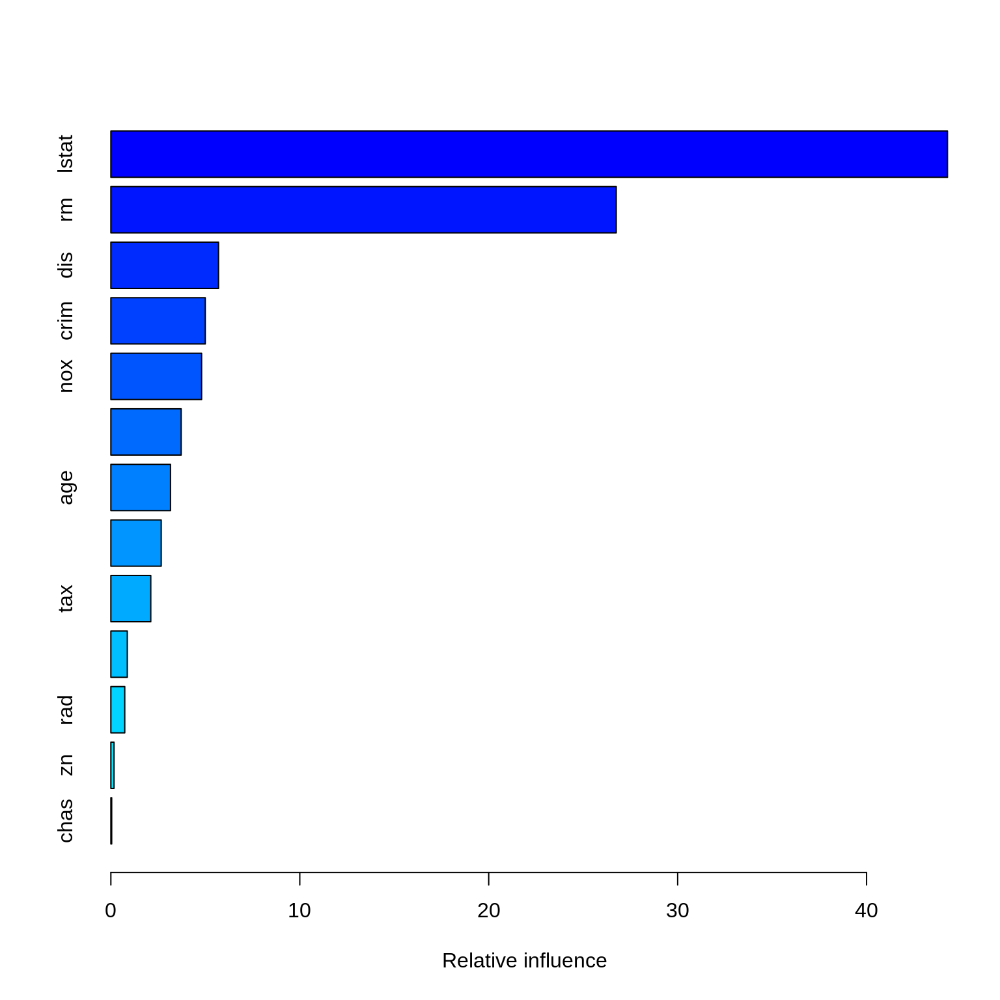
## # A tibble: 13 x 2
## var rel.inf
## <chr> <dbl>
## 1 lstat 44.3
## 2 rm 26.8
## 3 dis 5.70
## 4 crim 5.00
## 5 nox 4.80
## 6 black 3.72
## 7 age 3.16
## 8 ptratio 2.66
## 9 tax 2.11
## 10 indus 0.869
## 11 rad 0.735
## 12 zn 0.165
## 13 chas 0.0440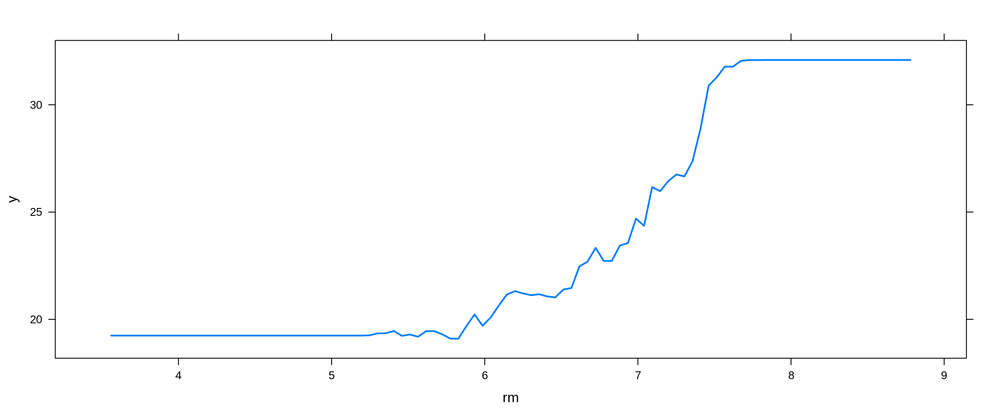
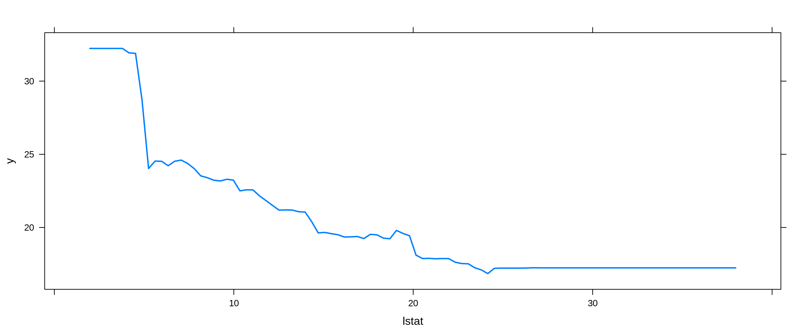
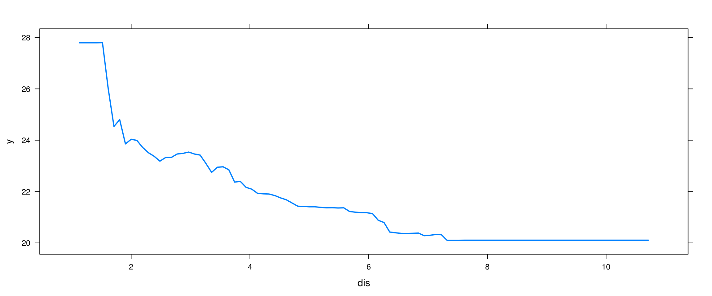
boston_boost_tst_pred = predict(booston_boost, newdata = boston_tst, n.trees = 5000)
(boost_tst_rmse = calc_rmse(boston_boost_tst_pred, boston_tst$medv))## [1] 3.656622plot(boston_boost_tst_pred, boston_tst$medv,
xlab = "Predicted", ylab = "Actual",
main = "Predicted vs Actual: Boosted Model, Test Data",
col = "dodgerblue", pch = 20)
grid()
abline(0, 1, col = "darkorange", lwd = 2)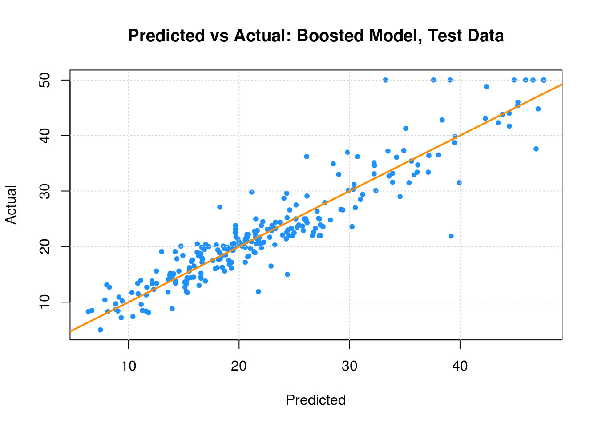
27.1.6 Results
(boston_rmse = data.frame(
Model = c("Single Tree", "Linear Model", "Bagging", "Random Forest", "Boosting"),
TestError = c(tree_tst_rmse, lm_tst_rmse, bag_tst_rmse, forest_tst_rmse, boost_tst_rmse)
)
)## Model TestError
## 1 Single Tree 5.051138
## 2 Linear Model 5.016083
## 3 Bagging 3.905538
## 4 Random Forest 4.172905
## 5 Boosting 3.656622While a single tree does not beat linear regression, each of the ensemble methods perform much better!
27.2 Classification
We now return to the Carseats dataset and the classification setting. We see that an additive logistic regression performs much better than a single tree, but we expect ensemble methods to bring trees closer to the logistic regression. Can they do better?
We now use prediction accuracy as our metric:
set.seed(2)
seat_idx = sample(1:nrow(Carseats), 200)
seat_trn = Carseats[seat_idx,]
seat_tst = Carseats[-seat_idx,]27.2.1 Tree Model
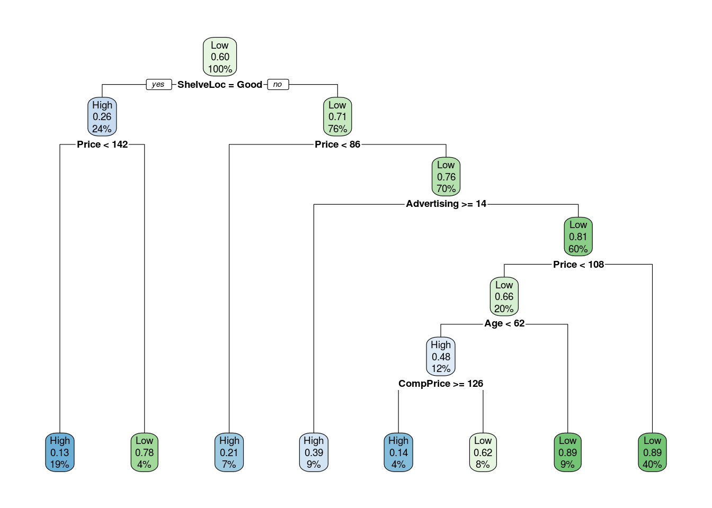
seat_tree_tst_pred = predict(seat_tree, seat_tst, type = "class")
table(predicted = seat_tree_tst_pred, actual = seat_tst$Sales)## actual
## predicted High Low
## High 58 20
## Low 25 97## [1] 0.77527.2.2 Logistic Regression
seat_glm_tst_pred = ifelse(predict(seat_glm, seat_tst, "response") > 0.5,
"Low", "High")
table(predicted = seat_glm_tst_pred, actual = seat_tst$Sales)## actual
## predicted High Low
## High 72 6
## Low 11 111## [1] 0.91527.2.3 Bagging
seat_bag = randomForest(Sales ~ ., data = seat_trn, mtry = 10,
importance = TRUE, ntrees = 500)
seat_bag##
## Call:
## randomForest(formula = Sales ~ ., data = seat_trn, mtry = 10, importance = TRUE, ntrees = 500)
## Type of random forest: classification
## Number of trees: 500
## No. of variables tried at each split: 10
##
## OOB estimate of error rate: 26%
## Confusion matrix:
## High Low class.error
## High 51 30 0.3703704
## Low 22 97 0.1848739seat_bag_tst_pred = predict(seat_bag, newdata = seat_tst)
table(predicted = seat_bag_tst_pred, actual = seat_tst$Sales)## actual
## predicted High Low
## High 62 14
## Low 21 103## [1] 0.82527.2.4 Random Forest
For classification, the suggested mtry for a random forest is \(\sqrt{p}.\)
seat_forest = randomForest(Sales ~ ., data = seat_trn, mtry = 3, importance = TRUE, ntrees = 500)
seat_forest##
## Call:
## randomForest(formula = Sales ~ ., data = seat_trn, mtry = 3, importance = TRUE, ntrees = 500)
## Type of random forest: classification
## Number of trees: 500
## No. of variables tried at each split: 3
##
## OOB estimate of error rate: 28.5%
## Confusion matrix:
## High Low class.error
## High 44 37 0.4567901
## Low 20 99 0.1680672seat_forest_tst_perd = predict(seat_forest, newdata = seat_tst)
table(predicted = seat_forest_tst_perd, actual = seat_tst$Sales)## actual
## predicted High Low
## High 58 8
## Low 25 109## [1] 0.83527.2.5 Boosting
To perform boosting, we modify the response to be 0 and 1 to work with gbm. Later we will use caret to fit gbm models, which will avoid this annoyance.
seat_trn_mod = seat_trn
seat_trn_mod$Sales = as.numeric(ifelse(seat_trn_mod$Sales == "Low", "0", "1"))seat_boost = gbm(Sales ~ ., data = seat_trn_mod, distribution = "bernoulli",
n.trees = 5000, interaction.depth = 4, shrinkage = 0.01)
seat_boost## gbm(formula = Sales ~ ., distribution = "bernoulli", data = seat_trn_mod,
## n.trees = 5000, interaction.depth = 4, shrinkage = 0.01)
## A gradient boosted model with bernoulli loss function.
## 5000 iterations were performed.
## There were 10 predictors of which 10 had non-zero influence.seat_boost_tst_pred = ifelse(predict(seat_boost, seat_tst, n.trees = 5000, "response") > 0.5,
"High", "Low")
table(predicted = seat_boost_tst_pred, actual = seat_tst$Sales)## actual
## predicted High Low
## High 68 10
## Low 15 107## [1] 0.87527.2.6 Results
(seat_acc = data.frame(
Model = c("Single Tree", "Logistic Regression", "Bagging", "Random Forest", "Boosting"),
TestAccuracy = c(tree_tst_acc, glm_tst_acc, bag_tst_acc, forest_tst_acc, boost_tst_acc)
)
)## Model TestAccuracy
## 1 Single Tree 0.775
## 2 Logistic Regression 0.915
## 3 Bagging 0.825
## 4 Random Forest 0.835
## 5 Boosting 0.875Here we see each of the ensemble methods performing better than a single tree, however, they still fall behind logistic regression. Sometimes a simple linear model will beat more complicated models! This is why you should always try a logistic regression for classification.
27.3 Tuning
So far we fit bagging, boosting and random forest models, but did not tune any of them, we simply used certain, somewhat arbitrary, parameters. Now we will see how to modify the tuning parameters to make these models better.
- Bagging: Actually just a subset of Random Forest with
mtry= \(p\). - Random Forest:
mtry - Boosting:
n.trees,interaction.depth,shrinkage,n.minobsinnode
We will use the caret package to accomplish this. Technically ntrees is a tuning parameter for both bagging and random forest, but caret will use 500 by default and there is no easy way to tune it. This will not make a big difference since for both we simply need “enough” and 500 seems to do the trick.
While mtry is a tuning parameter, there are suggested values for classification and regression:
- Regression:
mtry= \(p/3.\) - Classification:
mtry= \(\sqrt{p}.\)
Also note that with these tree-based ensemble methods there are two resampling solutions for tuning the model:
- Out of Bag
- Cross-Validation
Using Out of Bag samples is advantageous with these methods as compared to Cross-Validation since it removes the need to refit the model and is thus much more computationally efficient. Unfortunately OOB methods cannot be used with gbm models. See the caret documentation for details.
27.3.1 Random Forest and Bagging
Here we setup training control for both OOB and cross-validation methods. Note we specify verbose = FALSE which suppresses output related to progress. You may wish to set this to TRUE when first tuning a model since it will give you an idea of how long the tuning process will take. (Which can sometimes be a long time.)
To tune a Random Forest in caret we will use method = "rf" which uses the randomForest function in the background. Here we elect to use the OOB training control that we created. We could also use cross-validation, however it will likely select a similar model, but require much more time.
We setup a grid of mtry values which include all possible values since there are \(10\) predictors in the dataset. An mtry of \(10\) is actually bagging.
## [1] 200 11set.seed(825)
seat_rf_tune = train(Sales ~ ., data = seat_trn,
method = "rf",
trControl = oob,
verbose = FALSE,
tuneGrid = rf_grid)
seat_rf_tune## Random Forest
##
## 200 samples
## 10 predictor
## 2 classes: 'High', 'Low'
##
## No pre-processing
## Resampling results across tuning parameters:
##
## mtry Accuracy Kappa
## 1 0.695 0.3055556
## 2 0.740 0.4337363
## 3 0.720 0.4001071
## 4 0.740 0.4406798
## 5 0.740 0.4474551
## 6 0.735 0.4333975
## 7 0.735 0.4402197
## 8 0.730 0.4308000
## 9 0.710 0.3836999
## 10 0.740 0.4474551
##
## Accuracy was used to select the optimal model using the largest value.
## The final value used for the model was mtry = 2.## [1] 0.82The results returned are based on the OOB samples. (Coincidentally, the test accuracy is the same as the best accuracy found using OOB samples.) Note that when using OOB, for some reason the default plot is not what you would expect and is not at all useful. (Which is why it is omitted here.)
## mtry
## 2 2Based on these results, we would select the random forest model with an mtry of 2. Note that based on the OOB estimates, the bagging model is expected to perform worse than this selected model, however, based on our results above, that is not what we find to be true in our test set.
Also note that method = "ranger" would also fit a random forest model. Ranger is a newer R package for random forests that has been shown to be much faster, especially when there are a larger number of predictors.
27.3.2 Boosting
We now tune a boosted tree model. We will use the cross-validation tune control setup above. We will fit the model using gbm with caret.
To setup the tuning grid, we must specify four parameters to tune:
interaction.depth: How many splits to use with each tree.n.trees: The number of trees to use.shrinkage: The shrinkage parameters, which controls how fast the method learns.n.minobsinnode: The minimum number of observations in a node of the tree. (caretrequires us to specify this. This is actually a tuning parameter of the trees, not boosting, and we would normally just accept the default.)
Finally, expand.grid comes in handy, as we can specify a vector of values for each parameter, then we get back a matrix of all possible combinations.
gbm_grid = expand.grid(interaction.depth = 1:5,
n.trees = (1:6) * 500,
shrinkage = c(0.001, 0.01, 0.1),
n.minobsinnode = 10)We now train the model using all possible combinations of the tuning parameters we just specified.
seat_gbm_tune = train(Sales ~ ., data = seat_trn,
method = "gbm",
trControl = cv_5,
verbose = FALSE,
tuneGrid = gbm_grid)The additional verbose = FALSE in the train call suppresses additional output from each gbm call.
By default, calling plot here will produce a nice graphic summarizing the results.
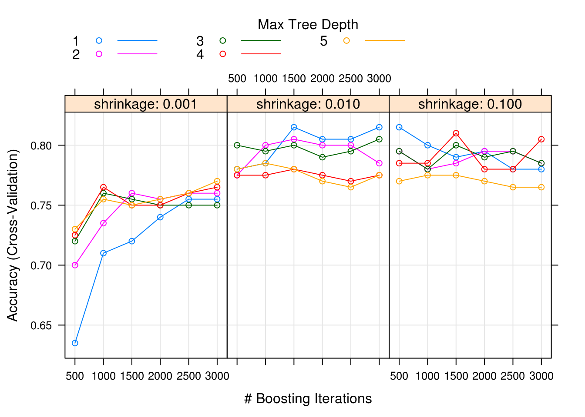
## [1] 0.84We see our tuned model does no better on the test set than the arbitrary boosted model we had fit above, with the slightly different parameters seen below. We could perhaps try a larger tuning grid, but at this point it seems unlikely that we could find a much better model. There seems to be no way to get a tree method to out-perform logistic regression in this dataset.
## n.trees interaction.depth shrinkage n.minobsinnode
## 64 2000 1 0.1 1027.4 Tree versus Ensemble Boundaries
library(mlbench)
set.seed(42)
sim_trn = mlbench.circle(n = 1000, d = 2)
sim_trn = data.frame(sim_trn$x, class = as.factor(sim_trn$classes))
sim_tst = mlbench.circle(n = 1000, d = 2)
sim_tst = data.frame(sim_tst$x, class = as.factor(sim_tst$classes))sim_trn_col = ifelse(sim_trn$class == 1, "darkorange", "dodgerblue")
plot(sim_trn$X1, sim_trn$X2, col = sim_trn_col,
xlab = "X1", ylab = "X2", main = "Simulated Training Data", pch = 20)
grid()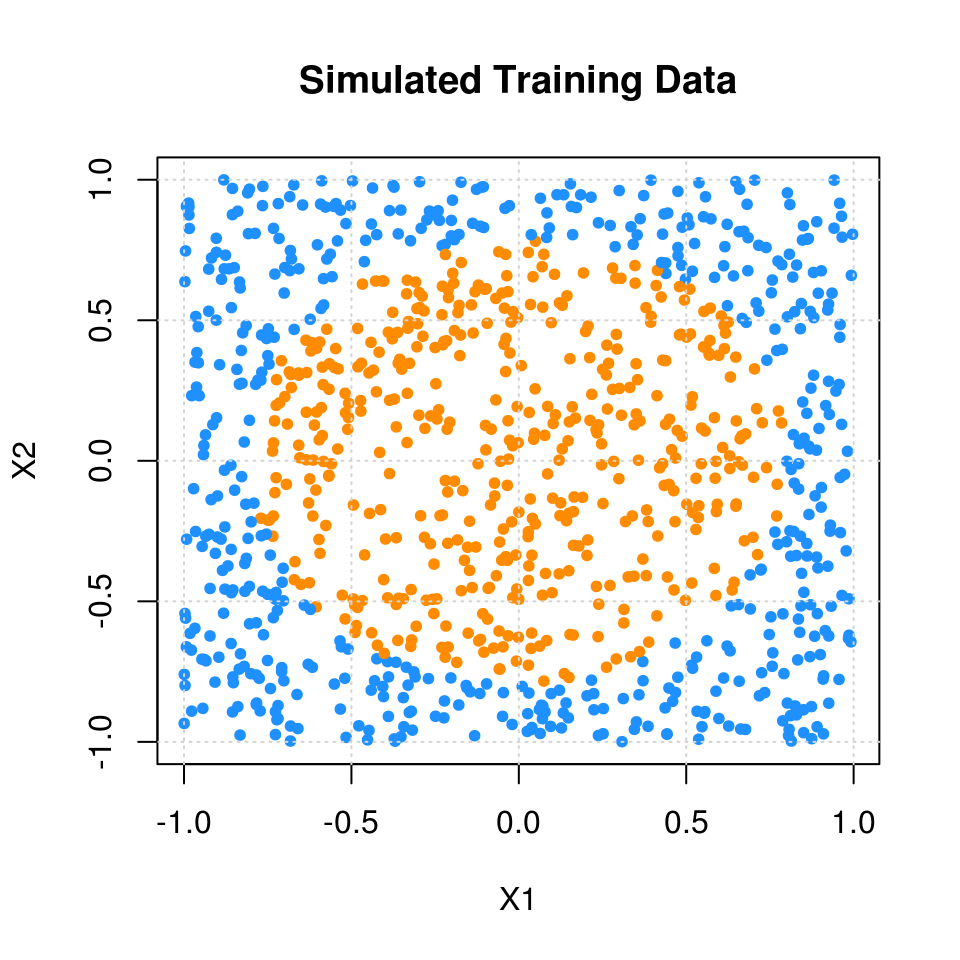
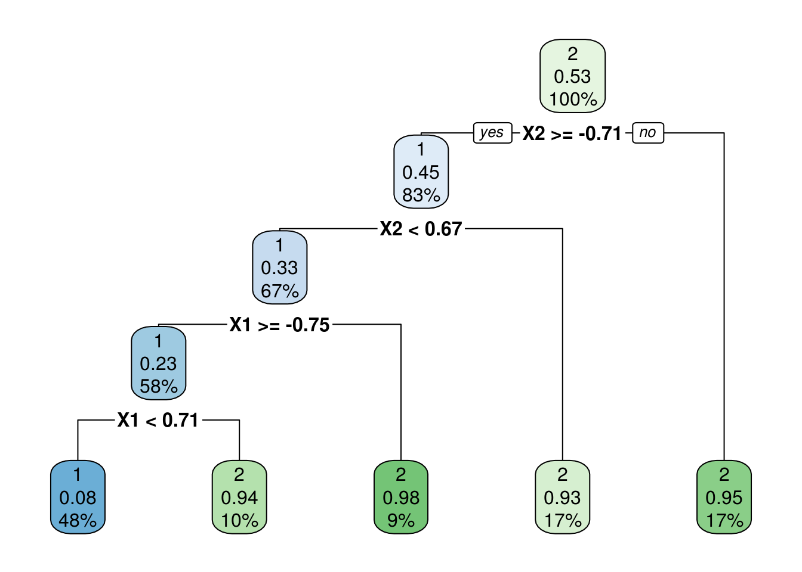
rf_grid = expand.grid(mtry = c(1, 2))
sim_rf_oob = train(class ~ .,
data = sim_trn,
trControl = oob,
tuneGrid = rf_grid)gbm_grid = expand.grid(interaction.depth = 1:5,
n.trees = (1:6) * 500,
shrinkage = c(0.001, 0.01, 0.1),
n.minobsinnode = 10)
sim_gbm_cv = train(class ~ .,
data = sim_trn,
method = "gbm",
trControl = cv_5,
verbose = FALSE,
tuneGrid = gbm_grid)plot_grid = expand.grid(
X1 = seq(min(sim_tst$X1) - 1, max(sim_tst$X1) + 1, by = 0.01),
X2 = seq(min(sim_tst$X2) - 1, max(sim_tst$X2) + 1, by = 0.01)
)
tree_pred = predict(sim_tree_cv, plot_grid)
rf_pred = predict(sim_rf_oob, plot_grid)
gbm_pred = predict(sim_gbm_cv, plot_grid)
tree_col = ifelse(tree_pred == 1, "darkorange", "dodgerblue")
rf_col = ifelse(rf_pred == 1, "darkorange", "dodgerblue")
gbm_col = ifelse(gbm_pred == 1, "darkorange", "dodgerblue")par(mfrow = c(1, 3))
plot(plot_grid$X1, plot_grid$X2, col = tree_col,
xlab = "X1", ylab = "X2", pch = 20, main = "Single Tree",
xlim = c(-1, 1), ylim = c(-1, 1))
plot(plot_grid$X1, plot_grid$X2, col = rf_col,
xlab = "X1", ylab = "X2", pch = 20, main = "Random Forest",
xlim = c(-1, 1), ylim = c(-1, 1))
plot(plot_grid$X1, plot_grid$X2, col = gbm_col,
xlab = "X1", ylab = "X2", pch = 20, main = "Boosted Trees",
xlim = c(-1, 1), ylim = c(-1, 1))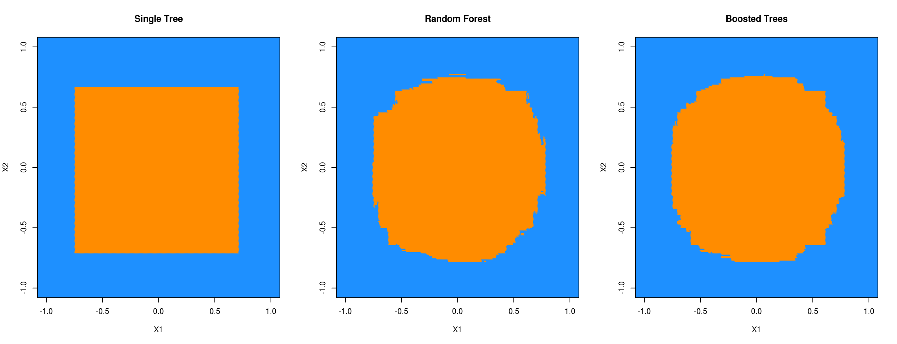
27.5 External Links
- Classification and Regression by
randomForest- Introduction to therandomForestpackage inRnews. ranger: A Fast Implementation of Random Forests - Alternative package for fitting random forests with potentially better speed.- On
ranger’s respect.unordered.factors Argument - A note on handling of categorical variables with random forests. - Extremely Randomized Trees
extraTreesMethod for Classificationand Regression- XGBoost - Scalable and Flexible Gradient Boosting
- XGBoost
RTutorial
27.6 rmarkdown
The rmarkdown file for this chapter can be found here. The file was created using R version 4.0.2. The following packages (and their dependencies) were loaded when knitting this file:
## [1] "mlbench" "ISLR" "MASS" "caret" "ggplot2"
## [6] "lattice" "gbm" "randomForest" "rpart.plot" "rpart"